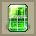
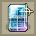
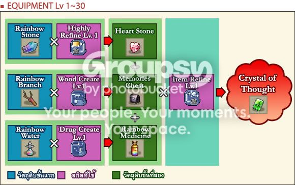
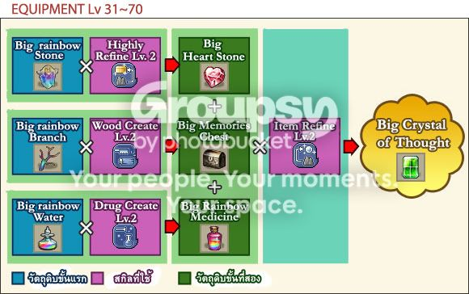

Re: ขอความช่วยเหลือหน่อยคะ
Lugia เขียน:III: Quest and construction
เรียนรู้การใช้งานเบื้องต้นไปแล้ว ทีนี้มากันถึงเควสที่เกี่ยวข้องและการเจาะรูอุปกรณ์รวมไปถึงการอัพเกรดการ์ดกันดีกว่าครับ
- เริ่มต้น Quest สู่ Card Laboratory
วิธีเข้า Card Laboratory ในครั้งแรก
1. คุยกับ NPC: Vakia ที่ Downtown ตะวันตก(ใกล้ๆบัันได)
2. เมื่อคุยเสร็จจะสามารถไปยัง Card Lab ได้ โดยมีเงื่อนไขคือ มีค่าชื่อเสียง 10 ขึ้นไป และ ห้ามมีคน possession(สิง) เราอยู่
NPC ภายใน Card Laboratory
#ตัวเลขแสดงตำแหน่งพร้อมรูปจะมาตอน patch เข้าแล้ว / ไม่รับรองว่าชื่อและคำพูดจะตรงกับภาษา(ถ้วย) ในเกมนะครับ~
ในหัวข้อนี้จะกล่าวเฉพาะตัว NPC และหน้าที่เท่านั้น คำศัพท์แปลกๆหรืออุปกรณ์แปลกๆที่โผล่ชื่อมาจะกล่าวถึงในหัวข้อต่อไปครัีบ
1. Dr.Senior
- คุยแล้วเลือก "ฟังเรื่องราวของ Iris Card"
- หลังจากนั้น NPC: Dreamer Hallelujah จะปรากฏตัวขึ้นที่ Downtown
- เมื่อคุยเสร็จ จะสามารถทำการเพิ่ม Card Slot รวมถึงการซื้อขายและแลกเปลี่ยนการ์ดได้ที่ Card Laboratory และ Downtown
- สามารถขอรับ Card Holder ได้ [เป็นอุปกรณ์เฟอร์นิเจอร์สำหรับเก็บการ์ดบน Flying garden
- นอกจากนี้ Dr.Senior ยังขายส่วนไอเท็มส่วนผสมจำเป็นสำหรับการเพิ่ม Card Slot ด้วย [หัวข้อต่อๆไป]
2. Ash Coltica
- สามารถทำการเพิ่ม Card Slot ได้
- สามารถทำ Card Assemble ได้ [หัวข้อต่อๆไป]
*ต้องคุยกับ 1. Dr.Senior เรียบร้อยแล้ว
3. Vakia
- สามารถซื้อ Blank Iris Card กับเขาได้ [หัวข้อต่อๆไป]
*ต้องคุยกับ 1. Dr.Senior เรียบร้อยแล้ว
4. Dreamer Hallelujah
- สามารถทำ Iris Card Exchange (แลกเปลี่ยนการ์ด) ได้ [หัวข้อต่อๆไป]
- ปรากฎตัวอยู่หลายที่ โดยมีชุดการ์ดที่แลกได้ต่างๆกันไป
*ต้องคุยกับ 1. Dr.Senior เรียบร้อยแล้ว
_________=====================================================================
- เพิ่ม Card Slot ให้ักับอุปกรณ์
ทำไมต้องเพิ่ม Card Slot?
-----: การจะติดตั้ง Iris card นั้นจำเป็นต้องเพิ่ีม Card Slot ที่อุปกรณ์เสียก่อน
-----: อุปกรณ์ที่สามารถเพิ่ม Card Slot ลงไป ได้แก่...
1. อาวุธ [อาวุธมือขวา, อาวุธ 2 มือ, ธนู]
2. เสื้อผ้า [upper body(เสื้อสวมใส่ส่วนบน), overall, เสื้อผ้าที่สวมทับส่วนบน]
3. เครื่องประดับอก (chest accessory)
วิธีเพิ่ม Card Slot
สามารถทำได้ 2 วิธีดังนี้
1. ขอร้อง NPC: Ash Coltica
-----: สถานที่คือ ตะวันตกเฉียงใต้ของDowntown และที่ Card Laboratory
-----: จำเป็นต้องมีเงื่อนไขบางอย่างจึงจะสามารถขอร้องได้ [ยังไม่ทราบเงื่อนไขที่แน่ชัด]
-----: เสียวัตถุดิบในการเพิ่ม Card Slot พร้อมค่าใช้จ่ายเป็นเงิน = Lv.ของอุปกรณ์ x 1,000 G [เท่าค่าหลอมไอเท็ม]
2. ใช้สกิล Item Refine ของตัวละครสาย Backpacker
-----: เมื่อใช้สกิลใส่ตัวละครจะมีคำสั่งสำหรับเพิ่ม Card Slot เพิ่มขึ้นมาให้เลือก และกดใช้ใส่คนอื่นได้ด้วย
-----: หากตัวละครมีสกิลผลิตไอเท็มที่ตรงกับอุปกรณ์ จะช่วยเพิ่มโอกาสในการเจาะ Card Slot ได้ด้วย สกิลที่เกี่ยวข้องมีดังนี้
1. อาวุธ [Weapon Create , Bow Create ,
Staff Create , Machine Create]
2. เสื้อผ้า [Sewing Create , Protection Create]
3. ไม่มีอาชีพใดๆที่มีสกิล
Item จำเป็นสำหรับการเพิ่ม Card Slot
-----: การเพิ่ม Card Slot ต้องใช้ไอเท็มกลุ่ม Crystal of Thought
-----: อุปกรณ์ที่ระดับเลเวลต่างๆจะใช้ Crystal of Thought ต่างกันออกไปดังนี้
Equipment Lv 1~30 ใช้ไอเท็มCrystal of Thought
Equipment Lv 31~70 ใช้ไอเท็ม
Big Crystal of Thought
Equipment Lv 71~99 ใช้ไอเท็ม
True Crystal of Thought
Crystal of Thought สามารถสร้างได้ดังนี้
1. วัตถุดิบสำคัญทั้งหมดสามารถซื้อได้จาก 1. Dr.Senior หลังคุยครั้งแรกเรียบร้อยแล้ว
รายการ Item ที่ Dr.Senior ขายเพื่อนำไปทำวัตถุดิบเพิ่ม Card Slot มีตังตารางนี้
2. นำวัตถุดับขั้นที่ 1 มาแปรรูปเป็นวัตถุดิบขั้นที่ 2 โดยใช้สกิลต่างๆของอาชีพสาย Backpacker [สามารถซื้อวัตถุดับขั้นที่ 2 ได้เลยเช่นกัน]
3. นำวัตถุดับขั้นที่ 2 ทั้ง 3 ชนิดมารวมกันเป็น Crystal of Thought ชนิดต่างๆโดยใช้สกิล Item Refine
ตารางส่วนผสม

โอกาสสำเร็จในการเพิ่ม Card Slot
การเำิ่พิ่ม Card Slot โดยใช้สกิล Item Refine ของสาย BP จำมีโอกาสสำเร็จสูงกว่าทำกับ NPC โดยมีโอกาสสำเร็จเพิ่มขึ้นตาม...
ทำกับ NPC --> ใ้ช้สกิล Item Refine ของสาย BP --> ใ้ช้สกิล Item Refine ของสาย BP ที่มีสกิลผลิตของตรงกับชนิดอุปกรณ์
โอกาสประสบความสำเร็จในการเพิ่ม Card Slot(แบบทำกับ NPC) จะเป็นไปตามตารางนี้
# หากการเจาะ Card Slot ล้มเหลว อุปกรณ์ชิ้นนั้นจะหายไปเลย
# การเพิ่ม Card Slot ก็มีัลักษณะเดียวกันกับการเพิ่มประสิทธิภาพอุปกรณ์(ตีบวกไอเท็ม) ซึ่งคงจะมี Cash Item สำหรับกันแตกแน่นอน
_________=====================================================================
- Card Assembly System
อะไรคือ Card Assembly system?
-----: คือการนำ Iris card ชนิดเดียวกันหลายๆใบมารวมกันเป็นใบเดียว เพื่อให้ได้การ์ดใบใหม่ที่ดีขึ้น
-----: การ์ดใบใหม่นี้จะมีรูปร่างเหมือนการ์ดเดิม เว้นแต่มี ค่าเวกเตอร์ (Vector) และ ค่าแก้ไขพลังธาตุ (Element Value Correction: EVC) เพิ่มมากขึ้น ซึ่งส่งผลให้ ระดับการปลดปล่อย (Releasibility Level: RLv) และ ระดับพลังธาตุ (Elemental Level: ELv) เพิ่มขึ้นนั่นเอง
-----: เมื่อทำการ Assemble จะทำให้ระดับการ์ด หรือ Rank (R) เพิ่มมากขึ้น
-----: Rank ของการ์ดมีอยู่ 5 ระดับคือ No Rank , R1 , R2 , R3 และสูงสุดที่ R4
-----: Rank ของการ์ดมีผลมากต่อระดับพลังที่การ์ดนั้นจะให้เรา เนื่องจากมีค่า Vector และ EVC มาก โดยกินช่องใส่เพียงช่องเดียว
ตัวอย่าง
การ์ดใบหนึ่ง(ของจริง) มีค่า Vector ในระดับ No Rank เป็น 5
เมื่อทำการ Assemble จะได้ดังนี้ R1 มี Vector เป็น 15 / R2 มี Vector เป็น 30 / R3 มี Vector เป็น 55 / และที่ R4 มี Vector เป็น 90!
ส่วนเรื่องรูปการ์ดและไอเท็มกล่าวไปแล้วว่าเหมือนเดิมเป๊ะ เพียงแต่มีสัญลักษณ์เพิ่มมานิดหน่อยอันนี้คือ Iris card ธรรมดา ไม่ได้ผ่านการ Assemble
และนี่เป็นการ์ดอัพเกรดระดับ R1 ครับ
วิธีทำ Assemble Card
1. ขอร้อง NPC: Ash Coltica ที่ Downtown หรือ Card Laboratory โดยเสียค่าใช้จ่ายครั้งละ 5,000 G [เท่าค่าตีบวก]
2. ใช้สกิล Item Refine ของตัวละครสาย Backpacker
โอกาสสำเร็จในการ Assemble Card
ตารางด้านล่างนี้คือจำนวน Iris card ที่ใช้ในการ Assemble ในระดับต่างๆ
# ตารางนี้เป็นกรณีที่ Assemble สำเร็จตลอด โดยการใ้ช้ใบกันแหกใน Cash ถ้าไม่ใช้ใบกันแหกจะต้องเตรียมไปมากกว่านี้
# มี Comment จากวิกิญี่ปุ่นว่า เตรียมการ์ดไปกว่า 2,000 ใบ ยังไม่ได้การ์ด R4 เลยแม้แต่ใบเดียว (ไม่ใช้ใบแคชกันแหก)
_________=====================================================================
- How to get Iris Card?
Blank & EX Blank Iris Card
เราไม่สามารถหา Iris card มาใช้งานได้ทันที แต่ต้องมี การ์ดไอริสว่าง(Blank Iris Card) เสียก่อน จากนั้นค่อยนำมันมาแลกเป็นการ์ดพร้อมใช้งานอีกที
การ์ดว่างๆนั้นมีอยู่สองแบบคือ Blank Iris Card และ EX Blank Iris Card
-----: Blank Iris Card เป็นการ์ดทั่วไป สามารถหาซื้อได้จาก NPC และดรอบจากมอนสเตอร์หลากหลายชนิด
NPC: Vakia จะขายการ์ดประเภทนี้ให้เรา รวมถึงการหาจากมอนตามตารางด้านล่างนี้
-----: EX Blank Iris Card เป็นการ์ดที่พิเศษ มีคุณสมบัติโดดเด่นกว่าการ์ดปกติ หาได้จากใน Cash Shop เท่านั้น ดังในตาราง
วิธีที่จะได้รับ Iris Card
Iris Card Exchange (แลกเปลี่ยนการ์ด)
-----: ได้จากการนำ Blank Iris Card หรือ EX Blank Iris Card ไปมอบให้ NPC: Dreamer Hallelujah เพื่อ Ramdom แลกกับ Iris card 1 ใบ
-----: Dreamer Hallelujah แต่ละสถานที่จะมีชุดการ์ดที่ Random แตกต่างกันออกไปดังนี้
ชุดที่ 1
นำ Blank Iris Card หรือ EX Blank Iris Card ไปแลกกับ Dreamer Hallelujah ที่ Downtown หรือที่ Card Laboratory
ชุดที่ 2
นำ EX Blank Iris Card ไปแลกกับ Dreamer Hallelujah ที่ Northan Promnard
ชุดที่ 3
ได้จากตั๋วตุ๋นชุด Aquarian age
ชุดที่ 4
นำ Blank Iris Card หรือ EX Blank Iris Card ไปแลกกับ Dreamer Hallelujah ที่ Iron City Upstairs
ชุดที่ 5
นำ EX Blank Iris Card ไปแลกกับ Dreamer Hallelujah ที่ Tonka Island
ชุดที่ 6
นำ EX Blank Iris Card ไปแลกกับ Dreamer Hallelujah ที่ Fareast City
ชุด Mintsuku
นำ Blank Iris Card ไปแลกกับ Dreamer Hallelujah ที่ ECO Town Shop Zone (ไม่สามารถแลก Uncommon: UC ได้)
_________=====================================================================
- ใช้งานและเก็บสะสม Iris Card
การติดตั้ง Iris Card
-----: การ์ดจะแสดงผลเมื่อติดตั้งเข้าไปยัง Card Slot ที่เจาะไว้แล้วบนอุปกรณ์
-----: สามารถติดตั้งได้ตามจำนวน Card Slot ของอุปกรณ์ชิ้นนั้นๆ และตามเงื่อนไขตำแหน่งติดตั้งของตัว Iris card เอง
-----: เมนูสำหรับถอดและใส่ Iris card จะอยู่ในหน้าต่างข้อมูลไอเท็ม (Item window)
-----: สามารถเลือก ได้ว่าจะทำการ ล็อก (Lock) การ์ดใบนั้นลงไปบนอุปกรณ์หรือไม่
=====: กรณีไม่ทำการ Lock จะมีโอกาสที่ Iris card จะเสียหายจากการต่อสู้ (เหมือนความทนทานลดลง) แต่เนื่องจาก Iris card ไม่มีความทนทาน เมื่อเกิดความเสียหาย การ์ดนั้นจะ หายไป จากอุปกรณ์เลย และถ้ามีคนสิง(possession) อุปกรณ์ชิ้นนั้นอยู่ Iris card บนนั้นจะ ไม่แสดงผล
=====: กรณีทำการ Lock การ์ดลงในอุปกรณ์ เราจะ ไม่สามารถถอด Iris card ออกมาได้อีก แต่การ์ดจะไม่เสียหายจากการต่อสู้ และยังแสดงผลเมื่อมีคนสิงอุปกรณ์
-----: เราสามารถ Unlock การ์ดได้โดยใช้ Cash Item
การเ็ก็บ Iris Card
-----: นอกจากจะเก็บไว้ในช่อง Item แล้ว เรายังสามารถเก็บการ์ดไว้ใน Card Holder ซึ่งเป็นเฟอร์นิเจอร์สำหรับสวนลอยฟ้าได้ด้วย
รูปร่างเป็นแบบนี้ครับ
-----: Card Holder เก็บได้สูงสุดแค่ 99 ใบต่อชนิด แต่มีช่องพอสำหรับการเก็บ Iris card ทุกชนิด
-----: แขกที่มาเยี่ยมสวนลอยฟ้า สามารถชมการ์ดที่เราเก็บไว้ใน Card Holder ได้
-----: หากไม่มีสวนลอยฟ้า ก็ไม่สามารถใช้งาน Card Holder ได้
-----: Card Holder เล่มแรกสามารถขอรับได้ที่ NPC: Dr.Senior โดยเลือกตอบว่า "อยากเก็บรักษาการ์ด"
-----: กรณีขอรับเล่มที่สอง ต้องเสียเงิน 10,000 G และไม่ว่าจะวาง Card Holder ไว้บนบ้านกีี่่เล่มก็ตาม จำนวน Iris card สูงสุดที่เก็บได้ก็ยังคงเป็น 99 ใบอยู่ดี
_________=====================================================================


viewtopic.php?f=36&t=74361